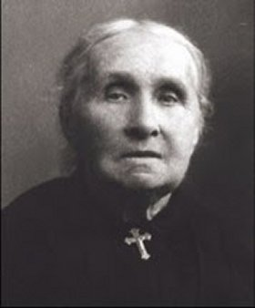
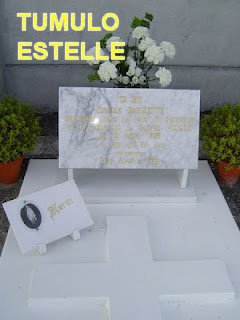
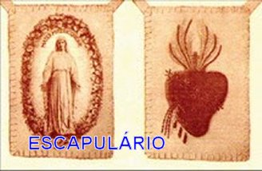
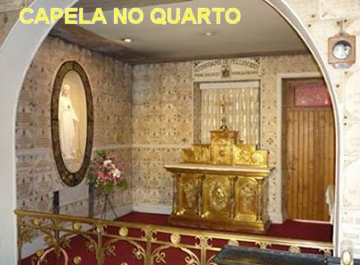
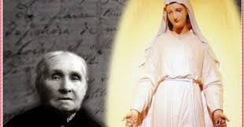
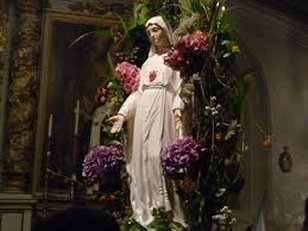

"MORTE"

Estelle tinha duas irmãs: Agostine a mais nova, e Genoveva mais velha 3 anos que ela. Com problemas de saúde Genoveva morreu aos 24 anos de idade e deixou dois filhos: o menino Eugênio que morreu com 13 meses de vida e uma menina muito esperta Estelle Petitot com a idade de 5 anos.
A irmã mais nova Agostine com 17 anos de idade abandonou a casa dos pais e desapareceu na imensidão do mundo. Nunca deu nenhuma notícia.
A sobrinha Estelle Petitot, filha de Genoveva, permaneceu vivendo com os avôs e tia Estelle Faguette. Na época das Aparições ela já estava uma mocinha. A Tia Estelle conseguiu colocá-la em Paris como aprendiz do comércio. Concluído o curso, embora tivesse oportunidade de trabalho, decidiu voltar a Pellevoisin. Todavia, pouco tempo passou na casa dos avôs e da tia Estelle. Certo dia saiu de casa e não voltou nunca mais e nem deu nenhuma notícia.
Todos estes acontecimentos
marcaram a vida de Estelle, que sempre foi uma mulher religiosa e competente,
preocupada com a manutenção e harmonia no lar, com a saúde dos pais e com a sua
própria saúde. Estes fatos acontecidos com membros da sua família lhe trouxeram
muitas angústias, sofrimentos e decepções, ao longo 
Depois das Aparições suas atividades aumentaram de modo admirável, com sua permanente divulgação dos ensinamentos da MÃE DE DEUS, assim como, com o seu laborioso esforço para implantar e difundir o uso do SANTO ESCAPULÁRIO DO SAGRADO CORAÇÃO DE JESUS. Com saúde e muita disposição, Estelle espiritualmente preparada, realizava um trabalho notável em Pellevoisin, que logo se estendeu por toda a redondeza, e na continuidade, foi convidada a visitar e levar a realidade dos fatos a muitas outras cidades, inclusive foi convidada a visitar o Sumo Pontífice no Vaticano.
Seus pais, com idade avançada, faleceram e foram sepultados no túmulo que estava reservado em seu nome no Cemitério local, presente da senhora Condessa de La Rochefoucould. Estelle ainda viveu muitos anos, trabalhando com muito empenho, cumprindo o pedido de NOSSA SENHORA e divulgando a Vontade Divina sem esmorecimentos. Simples, fiel e humilde Estelle Faguette morreu com 86 anos de idade e foi sepultada no mesmo túmulo onde anos anteriores foram sepultados os seus pais, no Cemitério de Pellevoisin. No túmulo, foram colocadas apenas duas palavras: "Seja simples" (conforme o desejo de NOSSA SENHORA).
"A IGREJA RECONHECE"
As primeiras investigações foram realizadas por Dom de La Tour d'Auvergne, Arcebispo de Bourges. Em 30 de Abril de 1876, com licença eclesiástica, ou seja, após a autorização do Arcebispo de Bourges, o quarto da Vidente Estelle foi transformado em Capela. Em 8 de Dezembro a Capela foi transformada em Oratório, e lhe foi concedida permissão para que ela fizesse cópias e distribuição do ESCAPULÁRIO DO SAGRADO CORAÇÃO DE JESUS”. Também foi colocado na Igreja um ex-voto de Estelle, uma placa de mármore semelhante aquela que apareceu ao lado de NOSSA SENHORA, com os dizeres: “Invoquei MARIA do mais profundo da minha miséria. ELA obteve de SEU FILHO a minha cura total”.
Em 1877, o Arcebispo de Bourges montou um inquérito e entrevistou 56 pessoas que conheciam Estelle; todos falaram favoravelmente. Um segundo inquérito foi realizado em dezembro de 1878, com resultados semelhantes.
Em 28 de julho de 1877 foi erigida
a CONFRARIA DA MÃE DE TODAS AS MISERICÓRDIAS, a qual foi elevada à dignidade de
Arquiconfraria em 1894, pelo Papa 
O mesmo Papa ofereceu um círio a Capela que funcionava no quarto onde viveu Estelle, concedendo indulgências aos peregrinos que a visitasse. Em 1904, o Cardeal Merry Del Val ofereceu a São Pio X um livro recentemente publicado sobre as Aparições de NOSSA SENHORA DA MISERICÓRDIA DE PELLEVOISIN.. O Pontífice enviou bênção em testemunho da sua acolhida favorável, e também recebeu Estelle em março de 1912.
Em 1922, o Papa Pio XI concedeu aos párocos de Pellevoisin o poder de impor o ESCAPULÁRIO DO SAGRADO CORAÇÃO DE JESUS, bem como de conceder indulgências a todos que o usassem.
Em 17 de outubro de 1915, o Papa Bento XV fez um comentário inspirado sobre as Aparições de NOSSA SENHORA, dizendo que a SANTÍSSIMA VIRGEM MARIA escolheu Pellevoisin como um lugar privilegiado para ELA dispensar as SUAS GRAÇAS.

No dia 7 de junho de 1936, pela mão do Cardeal Pacelli (que posteriormente se tornou o Papa Pio XII) enviou uma pintura de NOSSA SENHORA DE PELLEVOISIN como presente a uma Comunidade Dominicana.
Em 1979, o Cardeal Ciappi OP, mestre do Palácio Apostólico, entregou ao Papa João Paulo II um livro sobre o Centenário das Aparições de NOSSA SENHORA em Pellevoisin.
Em 1983, a comissão teológica que analisou os relatórios médicos a respeito da cura de Estelle, concluiu os seus trabalhos. O atual Arcebispo de Bourges, Dom Paul Vignancour, com base nas conclusões, reconheceu oficialmente o milagre com as palavras:“Um grande e admirável milagre”.
Em 19 de setembro de 1984, foi concedido pelo Arcebispo de Bourges, Dom Paul Vignancour, “Imprimatur” para uma Novena a NOSSA SENHORA DE PELLEVOISIN.
O lugar das Aparições em Pellevoisin, que aconteciam no quarto da Casa da Vidente Estelle, com as necessárias autorizações ao longos anos, foi se transformando em Oratório, Capela Diocesana, e hoje é a Capela do Convento das Irmãs Dominicanas, um local de convergência das peregrinações dos cristãos e devotos marianos de todo o mundo.
"CATEQUESE DA VIRGEM MARIA"

1) A SANTÍSSIMA VIRGEM MARIA pede a cada um de nós, calma, paciência e confiança, na realização dos nossos projetos de vida, assim como nos acontecimentos quotidianos da existência. A Calma conduz a tranquilidade espiritual e abre caminho para a Paz.
2)NOSSA SENHORA disse: por MEU intermédio JESUS tocará os corações mais empedernidos, para convertê-los.
3) ELA confirma: Sou toda misericordiosa e vim pela conversão dos pecadores.
4) Os tesouros do MEU FILHO estão a disposição de todos, sem exceções, porque são os verdadeiros filhos de DEUS.
5) Mesmo os pecados veniais ofendem e são detestados por JESUS e NOSSA SENHORA.
6) Seja simples, que seus atos correspondam as suas palavras. Evite a mentira e a falsidade.
7) Não só as pessoas religiosas consagradas se salvam. Todos podem se salvar, desde que ame a DEUS, tenha fé, pratique as Leis de DEUS e fuja do pecado.
8) Usem o Escapulário com o objetivo de reparar os ultrajes sofridos pelo SANTÍSSIMO SACRAMENTO, e também para me agradar.
9) Quero mais AMOR e RESPEITO para o MEU QUERIDO E AMADO FILHO.
10) Mas para receber as graças de DEUS, é necessário viver praticando uma existência digna e respeitosa, perseverante e cristã.
11) NOSSA SENHORA se preocupa muito
com a falta de respeito por SEU FILHO JESUS na SAGRADA COMUNHÃO, assim como a
irreverência das pessoas 
12) NOSSA SENHORA confirma: aqueles que se arrependem e buscam o caminho da conversão, tentarei reparar as suas faltas e os ultrajes feitos ao MEU FILHO, principalmente no Sacramento de SEU AMOR (a EUCARISTIA).
13) Ficarei muito feliz em ver que MEUS filhos usam o ESCAPULÁRIO DO SAGRADO CORAÇÃO DE JESUS. Eles receberão as graças pela grandeza da sua fé. As graças são do MEU FILHO que ME permite retirá-las de SEU MISERICORDIOSO CORAÇÃO.
14) Rezar e ser perseverante nas Orações, é o caminho para receber todos os benefícios de DEUS.
15) A preocupação em consolidar a fé verdadeira, deve ser o principal objetivo de todo cristão. Acreditar em DEUS e respeitar a SUA Justiça.
16) Cumprir a Justiça Divina consiste em aceitar todas as decisões e leis do SENHOR e fielmente permanecer no CAMINHO DELE.